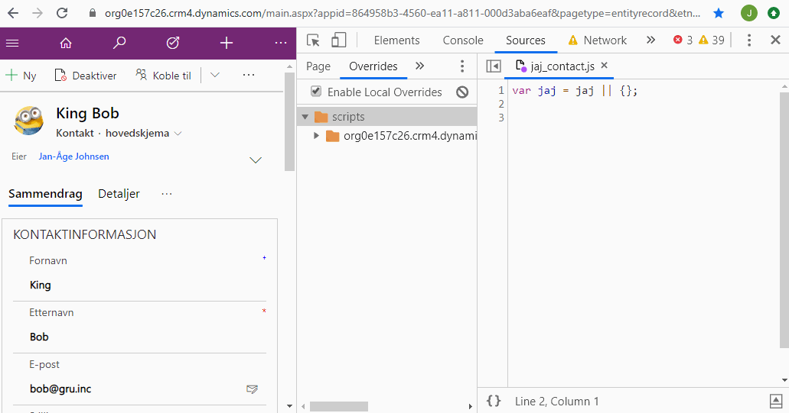
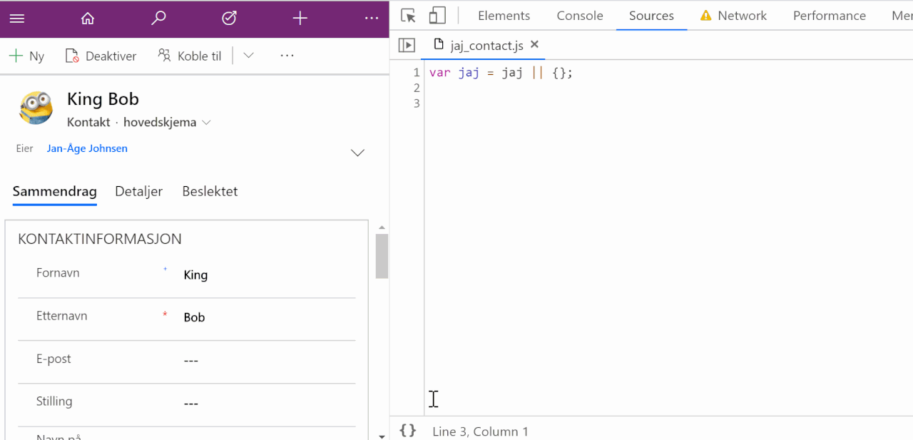

Hacking #dyn365 scripts like a boss😎
Disclaimer: This is by no means a new trick, it’s not limited to Dynamics 365 and I’m certainly not the first one to write about it. However, it saves me a lot of time when debugging or prototyping, and since I still run into people who haven’t seen it, I thought I should share!
tl;dr
Use Chrome Local Overrides to edit JavaScript directly in the browser:

Long version
- Open Chrome Developer Tools
- Click on the “Sources” tab
- Click “Show navigator”, if it’s not expanded
- Select the “Overrides” tab
- Click “Select folder for override” to select which folder to store local overrides
- Allow Chrome access to the folder
- Reload the browser window
- Use Ctrl + P and search for the JavaScript file you want to edit
- Do your edits
- Use Ctrl + S to save the file (locally)
- Reload the browser window to watch the changes take effect
Bring your own editor
Chrome also listens to local changes to the overridden files. This means that you can also use another editor to make changes to the files.

My thoughts about using this feature:
The good
- It cuts down the developer feedback loop – just save and reload. No need to edit, transpile, upload, publish, reload, test.
- You have all the tooling readily available, right inside Chrome. No need to open / install Visual Studio, Git, XrmToolkit, etc.
- Since you are only making changes to your local environment, you don’t risk wrecking anything for other people working in the same solution. This can be especially handy if you have to do some work directly in production… 🙀
The bad
- Doesn’t fit very well with workflows using TypeScript, or other ES variants, which needs to be transpiled.
- It smells like an anti-pattern, and since your changes aren’t backed by source control it’s easy to lose track of changes. Therefor I would try to limit this trick to debugging and prototyping.
The ugly
- Every time you publish a new version of the script in Dynamics, the resource path (URI) is updated. This leads to Chrome losing the link between the remote and local file, and you must store a new file, locally, if you want to make future edits. This makes integration with build tools and source control difficult.